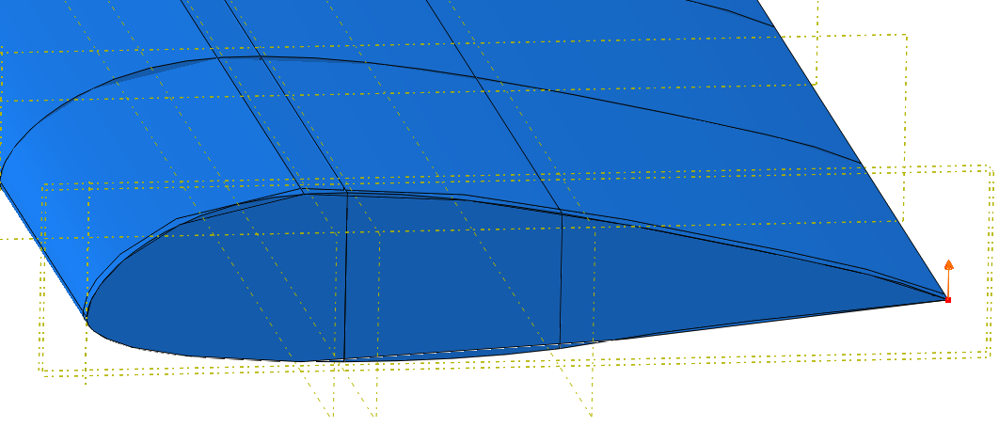
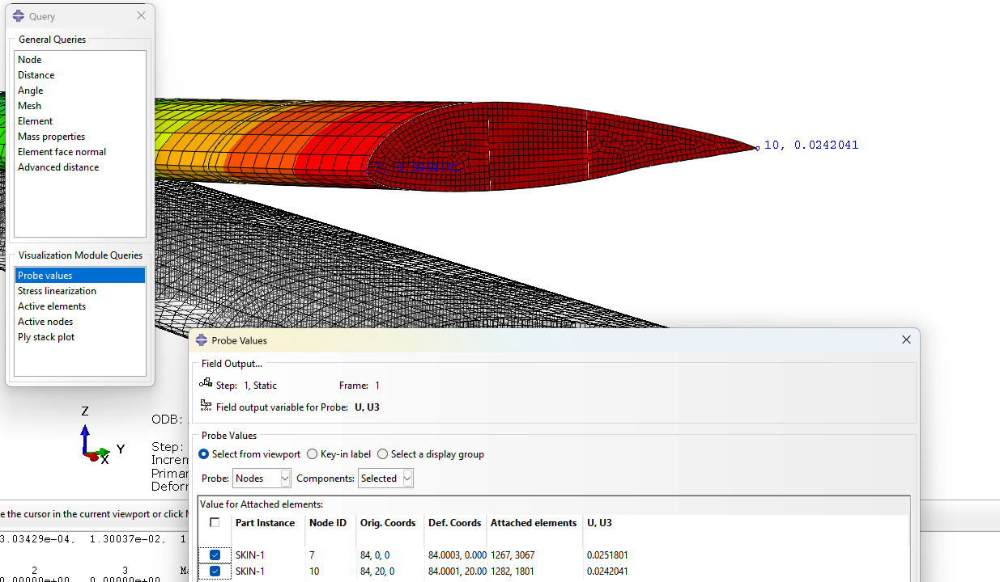
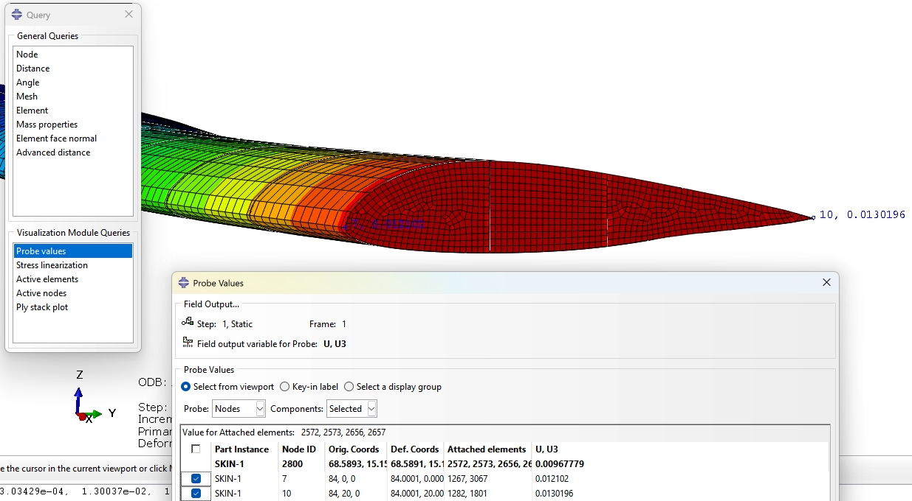
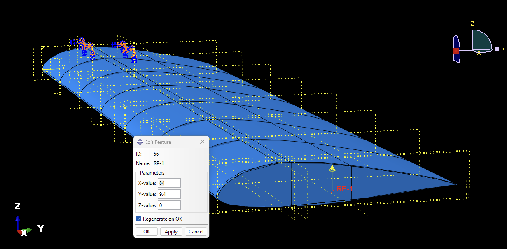
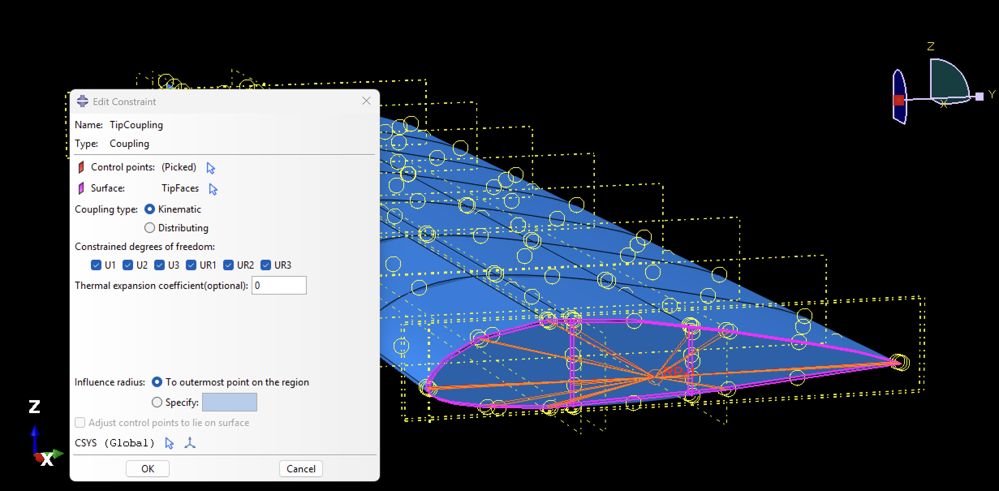
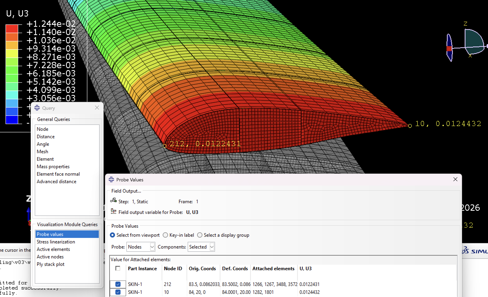
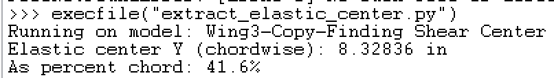
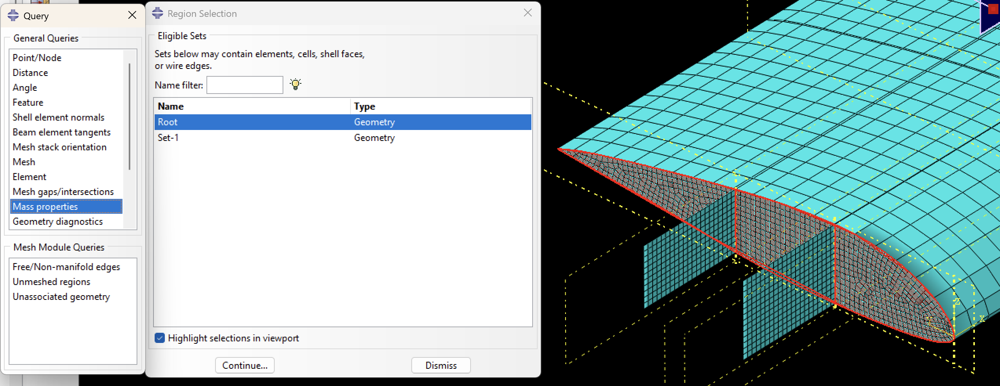
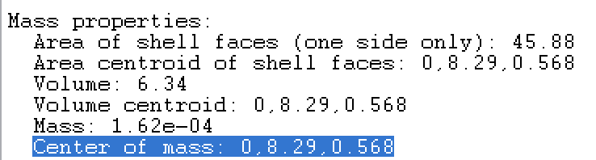
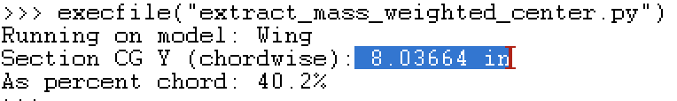

Tutorial 4: Locating the Shear Center, Elastic Center, and Section CG
Overview
This tutorial determines the three cross-sectional properties that govern bending-torsion flutter of a uniform wing: the shear center (the zero-twist load point), the elastic center (stiffness-weighted centroid), and the section CG (mass-weighted centroid).
The elastic center uses \(E \cdot A\) as the weighting, representing how stiffness is distributed across the section. The section CG uses \(\rho \cdot A\), representing mass distribution. The shear center is fundamentally different from both — it is not a weighted centroid at all, but the unique point through which a transverse load produces pure bending with no twist.
Together, these define the two critical offsets in classical flutter theory: the separation between the elastic axis and the aerodynamic center, and the static mass unbalance between the section CG and the elastic axis. All three are evaluated at the root cross-section.
Part 1: Shear Center
1.1 Physical Interpretation
The shear center defines the elastic axis of the wing — the spanwise line along which a transverse load must act to produce pure bending without any twist. Its chordwise position relative to the aerodynamic center (~25% chord) determines whether the wing twists into or away from the oncoming flow under load.
A load applied forward of the shear center twists the section nose-up; a load applied aft twists it nose-down. The shear center is the zero-twist point between them.
1.2 Abaqus Procedure
Run two separate static steps with identical boundary conditions, varying only the load point:
- Case 1: 1 lbf upward (+Z) concentrated force at the LE tip node
- Case 2: 1 lbf upward (+Z) concentrated force at the TE tip node
Apply both as Concentrated Force in the Load module at the same spanwise tip station.
| Leading Edge | Trailing Edge |
|---|---|
 |
[Screenshot: Load placement at LE and TE tip nodes]
After running, query Z-displacement (U3) at the LE and TE tip nodes at the root station (Z = 0). Use unscaled field output values only.
| Leading Edge Results |
|---|
 |
| Trailing Edge Results |
|---|
 |
[Screenshot: Field output query at tip LE and TE nodes, U3 column]
Twist angle for each case, where \(c\) is the chordwise distance between the two query nodes (20" here):
Shear center location from the LE, by linear interpolation between the two load points:
This formula finds the fraction of chord at which the two twist contributions cancel — i.e., the point where a load would produce zero net twist.
\(\theta_1\) and \(\theta_2\) must have opposite signs — one case twists nose-up, the other nose-down. If both have the same sign, the shear center lies outside the chord and the two load points did not bracket it.
| \(U3_{LE}\) | \(U3_{TE}\) | \(c\) | \(\theta\) | |
|---|---|---|---|---|
| Case 1 — LE load | 0.02518" | 0.02420" | 20" | \(+4.88 \times 10^{-5}\) rad |
| Case 2 — TE load | 0.01210" | 0.01320" | 20" | \(-5.50 \times 10^{-5}\) rad |
1.3 Verification
Place a reference point at the computed shear center and apply the 1 lbf load through it via a distributing coupling to the tip cross-section nodes. Re-run and confirm \(\theta \approx 0\).
In the Assembly module: Tools → Reference Point at
(tip_X, e, 0). Then Interaction → Constraints → Coupling, distributing type, control point = reference point, coupling region = all tip cross-section nodes.

[Screenshot: Reference point at shear center with unit load upward]
[Screenshot: Distributing coupling at shear center reference point]
[Screenshot: U3 nearly equal at LE and TE tip nodes, confirming zero twist]Note on spanwise variation. For a uniform wing — constant cross-section and stiffness along the span — the shear center is a property of the cross-section geometry alone and does not change spanwise. The load can be applied at any station and the same chordwise position will result. The tip is simply convenient because deflections are largest there and easiest to measure accurately.
For a tapered wing or one with a spanwise-varying composite layup, the shear center technically shifts along the span. In practice, because spar positions and their relative stiffnesses dominate the shear center location, and spars in a typical composite wing run the full span at fixed chordwise positions, the migration is usually small even when skin layup varies.
Part 2: Elastic Center
2.1 Physical Interpretation
The elastic center is the \(EA\)-weighted centroid of the cross-section — the chordwise position \(\bar{y}\) at which bending stiffness is balanced. For a composite wing with skins and spars of different moduli, it shifts toward the stiffer members.
For aeroelastic assessment, compare \(\bar{y}\) against: - The aerodynamic center (~25% chord) — for positive flutter margin the elastic axis should sit at or forward of this point - The shear center — for a symmetric section these coincide; a large separation on a cambered section implies significant bending-torsion coupling
2.2 Simplified Estimate
Because spar caps carry the majority of axial bending stiffness, a useful first estimate uses only the spar contributions:
where \(y_{fs}\), \(y_{rs}\) are the chordwise positions of the front and rear spars and \(A\) is the total cross-sectional area at each spar.
Since this model has no discrete spar caps and both spars use the same material, \(E\) cancels and the estimate reduces to a pure area-weighted average of the two spar web areas:
The front spar carries slightly more area and pulls the elastic center forward of the midpoint between the two spars.
2.3 Python Script
For a more complete result that includes skin contributions, the script below integrates \(E \cdot t \cdot ds\) along all root cross-section members:

from abaqus import mdb
import math
model_name = mdb.models.keys()[0] # index 0 = first model; change if multiple models exist
model = mdb.models[model_name]
assembly = model.rootAssembly
print('Running on model: %s' % model_name)
# --- INPUTS ---
# Effective longitudinal modulus Ex for each member (psi)
E_skin = 8.3e6 # effective Ex for skin laminate
E_spar = 20.0e6 # effective Ex for spar laminate
# Total laminate thickness per member (in)
t_skin = 0.02 + 0.11811 + 0.02 # total skin thickness
t_spar = 4 * 0.01 # total spar thickness
members = [ # (instance name, thickness, modulus)
('Skin-1', t_skin, E_skin),
('FrontSpar-1', t_spar, E_spar),
('RearSpar-1', t_spar, E_spar),
]
# --- CALCULATION ---
int_E_ds = 0.0
int_Ey_ds = 0.0
for inst_name, t, E in members:
inst = assembly.instances[inst_name]
root_nodes = [n for n in inst.nodes if n.coordinates[0] < 0.5]
root_nodes = sorted(root_nodes, key=lambda n: n.coordinates[1])
for i in range(len(root_nodes) - 1):
y0 = root_nodes[i].coordinates[1]
y1 = root_nodes[i+1].coordinates[1]
z0 = root_nodes[i].coordinates[2]
z1 = root_nodes[i+1].coordinates[2]
ds = math.sqrt((y1-y0)**2 + (z1-z0)**2)
ym = 0.5*(y0 + y1)
int_E_ds += E * t * ds
int_Ey_ds += E * t * ym * ds
y_bar = int_Ey_ds / int_E_ds
print('Elastic center Y (chordwise): %.5f in' % y_bar)
print('As percent chord: %.1f%%' % (y_bar / 20.0 * 100.0))
Confirm instance and material names before running:
Part 3: Section CG (Mass-Weighted Centroid)
3.1 Physical Interpretation
The section CG is the chordwise position at which the section's inertia is balanced. It is computed identically to the elastic center, but with density \(\rho\) replacing modulus \(E\) as the weighting.
In classical flutter theory, the offset between the section CG and the elastic axis appears as the static mass unbalance parameter \(x_\alpha\), which couples the bending and torsion modes. A section CG sitting aft of the elastic axis means inertial forces during an oscillation cycle reinforce twist rather than oppose it, which lowers the flutter speed.
3.2 Abaqus Mass Properties Query
The most direct method is a mass properties query on the root cross-section. In the Mesh module, create a set containing all root cross-section elements, then run Query → Mass Properties with that set selected.

[Screenshot: Mass properties query dialog with root cross-section set selected]
[Screenshot: Mass properties query output]3.3 Python Script (Density-Weighted)
To compute the section CG with the same integration approach used for the elastic center — useful for direct comparison — replace \(E \cdot t\) with \(\rho \cdot t\):
# Replace modulus values with material density (lb/in^3)
rho_skin = 0.056 # CF woven
rho_spar = 0.056 # CF UD
int_rho_ds = 0.0
int_rho_y_ds = 0.0
for inst_name, t, rho in members:
...
int_rho_ds += rho * t * ds
int_rho_y_ds += rho * t * ym * ds
y_cg = int_rho_y_ds / int_rho_ds
print('Section CG Y (chordwise): %.5f in' % y_cg)
print('As percent chord: %.1f%%' % (y_cg / 20.0 * 100.0))

[Screenshot: Section CG result from script]The script result will differ slightly from the mass query if a uniform density is assumed across all members rather than using the actual per-ply material densities.